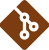
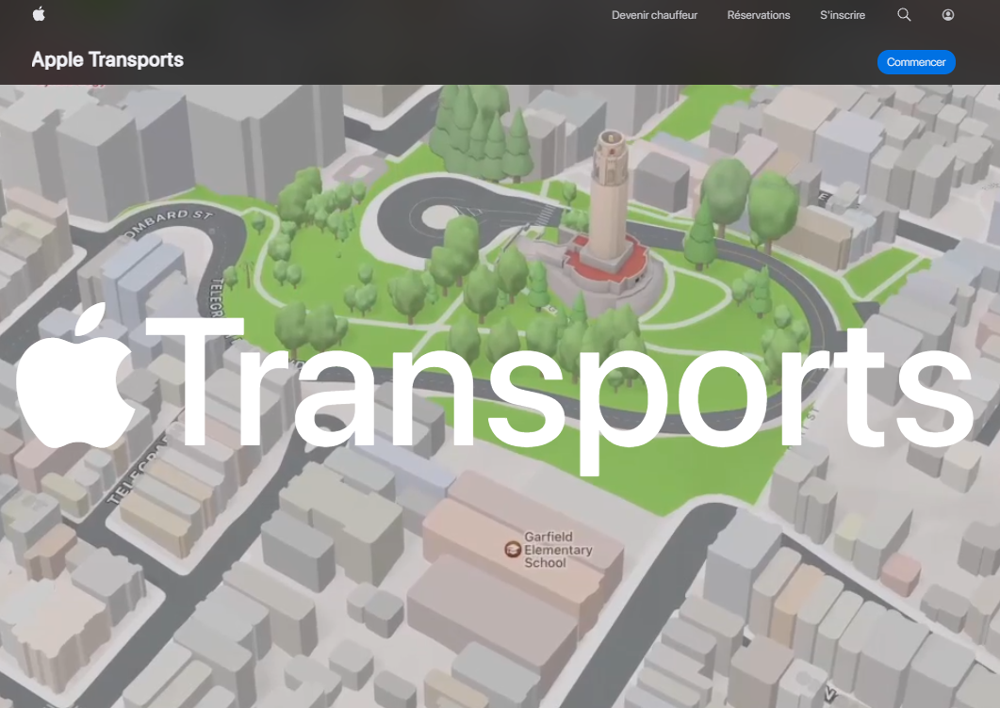
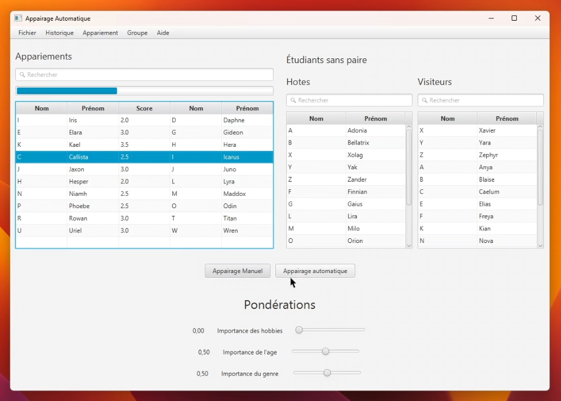
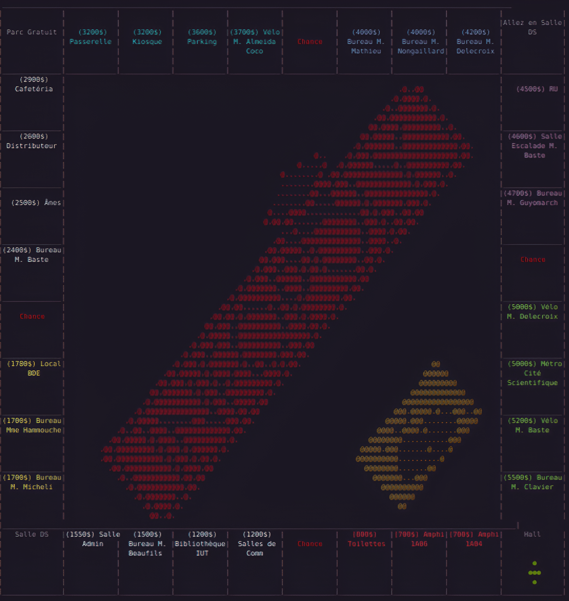
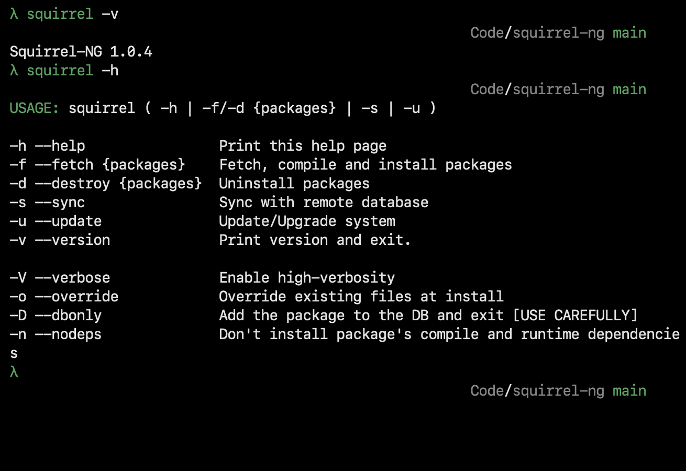

Mon
histoire
Pendant que la plupart des gamins de 8 ans essayaient de ne pas manger de la colle, j'installais ma première distribution Linux. Ce qui n'était au départ qu'une simple curiosité est vite devenu une obsession. À 12 ans, j'ai commencé à coder en Python pour créer mes propres jeux-vidéo, avant de bifurquer vers le Web et l'UI/UX à 13 ans.
Mon adolescence ? Je l'ai passée à casser (puis réparer) des systèmes. J'ai expérimenté avec tout ce qui me passait sous la main :
- Hardcore Linux : De l'installation de Gentoo, Arch, à la compilation de Linux From Scratch (LFS). Si ça se compile, je l'ai probablement testé.
- Hardware & Réseau : J'ai transformé ma chambre en data center miniature, incluant la création d'un hotspot Wi-Fi maison avec un Raspberry Pi
- Automatisation : Pourquoi faire simple quand on peut automatiser ? J'ai passé un temps déraisonnable à interconnecter mes devices pour créer un écosystème de travail unique. Puis j'ai tout détruit. Puis j'ai recommencé.
Après un Bac NSI/Maths (Mention Très Bien) en 2024, j'ai intégré un BUT Informatique à l'IUT de Lille. C'est là que le déclic a eu lieu : le développement logiciel pur ne me suffisait plus. J'ai délaissé SOLID pour mieux me concentrer sur la solidité des infrastructures.
Aujourd'hui, je me spécialise dans le parcours "Déploiement d'applications communicantes". Mon objectif est clair : mettre mes années de bidouillage système et ma rigueur apprise au service de la culture DevOps/SRE. Je ne veux plus juste écrire du code, je veux construire les autoroutes sur lesquelles il circule, et m'assurer qu'elles soient bien robustes.
Pourquoi travailler avec moi ?
Je ne suis pas juste un étudiant qui suit des cours. Je suis un passionné qui déjà passé plus de 10 ans à explorer les entrailles des systèmes. Je sais ce que signifie "ça marchait en local", et mon but est que ça marche aussi (et surtout) en prod.
Note d'autodérision : Je promets de ne pas installer Gentoo sur les serveurs de l'entreprise. Enfin, normalement.
Tech
Stack
Infrastructure & SysAdmin
Linux/UNIX
Administration, maintenance kernel, bootloader et services.
Docker
Conteneurisation, orchestration et construction d'images optimisées.
Networking
Orchestration de réseaux IPv4/IPv6, routing et proxy.
Qemu/KVM
Virtualisation et création d'environnements d'exécution.
DevOps & Automatisation
Ansible
Gestion de configurations et déploiement d'infra-as-code
Bash
Scripting shell pour l'automatisation des tâches récurrentes du système.

Git
Versionnement de code et configuration (GitOps).
Pipelines CI/CD
Mise en place et maintenance des chaînes de livraison continue automatisées.
Cas
d'études
Déploiement
Développement

Apple Transports
Une application de covoiturage fictive basée sur la philosophie de design d'Apple.
Outil de décision pour séjours linguistiques
Un outil d'associations pour la constitution de groupes pour séjours linguistiques.
Infopoly
Un jeu vidéo inspiré du célèbre jeu de plateau Monopoly, qui se déroule au sein du département Informatique de l'IUT de Lille.
Squirrel
Un gestionnaire de paquets source-based pour une distribution Linux légère.